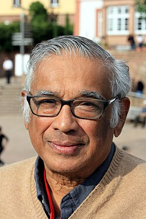

Srinivasa
Varadhan | |
|---|---|
 Srinivasa Varadhan at the 1st Heidelberg Laureate Forum in September 2013 | |
| Born | 2 January 1940 |
| Education | Presidency College, Chennai (BS, MS) Indian Statistical Institute (PhD) |
| Known for | Martingale problems; Large deviation theory |
| Awards | Padma Vibhushan (2023) National Medal of Science (2010) Padma Bhushan (2008) Abel Prize (2007) Steele Prize (1996) Birkhoff Prize (1994) |
| Scientific career | |
| Fields | Mathematics |
| Institutions | Courant Institute of Mathematical Sciences (New York University) |
| C R Rao | |
Doctoral students | Peter Friz Jeremy Quastel |
Sathamangalam Ranga Iyengar Srinivasa Varadhan, FRS (born 2 January 1940) is an Indian American mathematician and statistician. He is known for his fundamental contributions to probability theory and in particular for creating a unified theory of large deviations.[1] He is regarded as one of the fundamental contributors to the theory of diffusion processes with an orientation towards the refinement and further development of Itô’s stochastic calculus.[2] In the year 2007, he won the Abel Prize.[3][4]
Srinivasa was born into a Hindu Tamil Brahmin Iyengar family in 1940 [5] in Chennai (then Madras). In 1953, his family migrated to Kolkata. He grew up in Chennai and Kolkata.[6]
Varadhan received his undergraduate degree in 1959 and his postgraduate degree in 1960 from Presidency College, Chennai. He received his doctorate from Indian Statistical Institute in 1963 under C R Rao,[7][8] who arranged for Andrey Kolmogorov to be present at Varadhan's thesis defence.[9] He was one of the "famous four" (the others being Ramaswamy Ranga Rao, K R Parthasarathy, and Veeravalli S Varadarajan) in ISI during 1956–1963.[10]
Since 1963, he has worked at the Courant Institute of Mathematical Sciences at New York University, where he was at first a postdoctoral fellow (1963–66), strongly recommended by Monroe D Donsker. Here he met Daniel Stroock, who became a close colleague and co-author. In an article in the Notices of the American Mathematical Society, Stroock recalls these early years:
Varadhan, whom everyone calls Raghu, came to these shores from his native India in the fall of 1963. He arrived by plane at Idlewild Airport and proceeded to Manhattan by bus. His destination was that famous institution with the modest name, The Courant Institute of Mathematical Sciences, where he had been given a postdoctoral fellowship. Varadhan was assigned to one of the many windowless offices in the Courant building, which used to be a hat factory. Yet despite the somewhat humble surroundings, from these offices flowed a remarkably large fraction of the post-war mathematics of which America is justly proud.
Varadhan is currently a professor at the Courant Institute.[11][12] He is known for his work with Daniel W Stroock on diffusion processes, and for his work on large deviations with Monroe D Donsker. He has chaired the Mathematical Sciences jury for the Infosys Prize from 2009 and was the chief guest in 2020.[13]
His son, Ashok Varadhan, is an executive at financial firm Goldman Sachs.[14]
Varadhan's awards and honours include the National Medal of Science (2010) from President Barack Obama, "the highest honour bestowed by the United States government on scientists, engineers and inventors".[15] He also received the Birkhoff Prize (1994), the Margaret and Herman Sokol Award of the Faculty of Arts and Sciences, New York University (1995), and the Leroy P Steele Prize for Seminal Contribution to Research (1996) from the American Mathematical Society, awarded for his work with Daniel W Stroock on diffusion processes.[16] He was awarded the Abel Prize in 2007 for his work on large deviations with Monroe D Donsker.[11][17] In 2008, the Government of India awarded him the Padma Bhushan.[18] and in 2023, he was awarded India's second highest civilian honor Padma Vibhushan.[19][20] He also has two honorary degrees from Université Pierre et Marie Curie in Paris (2003) and from Indian Statistical Institute in Kolkata, India (2004).
Varadhan is a member of the US National Academy of Sciences (1995),[21] and the Norwegian Academy of Science and Letters (2009).[22] He was elected to Fellow of the American Academy of Arts and Sciences (1988),[23] the Third World Academy of Sciences (1988), the Institute of Mathematical Statistics (1991), the Royal Society (1998),[24] the Indian Academy of Sciences (2004), the Society for Industrial and Applied Mathematics (2009),[25] and the American Mathematical Society (2012).[26]
{kind=link}